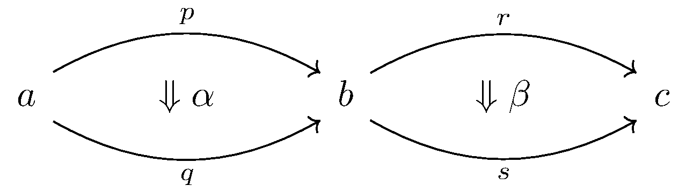

January 3rd
$\renewcommand{\AA}{\mathbb A} \newcommand{\RR}{\mathbb R} \newcommand{\ZZ}{\mathbb Z} \newcommand{\NN}{\mathbb N} \newcommand{\QQ}{\mathbb Q} \newcommand{\CC}{\mathbb C} \newcommand{\FF}{\mathbb F} \newcommand{\PP}{\mathbb P} \newcommand{\e}{\varepsilon} \newcommand{\ball}[2]{(#1-#2,\,#1+#2)} \newcommand{\floor}[1]{\left\lfloor{#1}\right\rfloor} \newcommand{\ceil}[1]{\left\lceil{#1}\right\rceil} \newcommand{\norm}[1]{\left\lVert{#1}\right\rVert} \newcommand{\diff}{\operatorname{diff }} \newcommand{\disc}{\operatorname{disc }} \newcommand{\ord}{\text{ord}} \newcommand{\lcm}{\text{lcm}} \newcommand{\del}{\partial} \newcommand{\emp}{\varnothing} \newcommand{\divides}{\,|\,} \newcommand{\op}[1]{\operatorname{#1}} \newcommand{\mf}[1]{\mathfrak{#1}} \newcommand{\mc}[1]{\mathcal{#1}} \newcommand{\sgn}{\operatorname{sgn}} \newcommand{\refl}{\op{refl}} \newcommand{\UU}{\mathcal{U}} $Today I learned the details of the Eckmann-Hamilton theorem in type theory. The main ingredient is horizontal composition, defined with whiskering. Horizontal composition is defined over homotopies of homotopies, in the following setup.
Here, $a,b,c:A$ where $p,q:a=_Ab$ and $r,s:b=_Ac,$ with even $\alpha:p=_{a=b}q$ and $\beta:r=_{b=c}s.$ The idea is that we should be able to exhibit something like \[\alpha\star\beta:p\cdot r=_{a=c}q\cdot s\]by imagining moving $p\to q$ by $\alpha$ and $r\to s$ by $\beta.$ This is horizontal composition.
To do this, we move the homotopies one at a time, which is called whiskering. Namely, we exhibit\[\alpha\cdot_{r}r:p\cdot r=q\cdot r,\qquad q\cdot_{\ell}\beta:q\cdot r=q\cdot s.\]Imagine $\alpha\cdot_rr$ as fixing the $r$ight whisker $r$ and dragging $p\to q$ by $\alpha$ and then $q\cdot_\ell\beta$ fixes the $\ell$eft whisker and then drags $r\to s$ by $\beta.$ This is doing what we wanted horizontal composition to do. Observe that composing will witness\[p\cdot r\stackrel{\alpha\cdot_rr}=q\cdot r\stackrel{q\cdot_\ell\beta}=q\cdot s,\]which is exactly what we wanted. So it remains to exhibit $\cdot_r$ and $\cdot_\ell.$ I'll do one of these formally; the other is similar.
We define $\alpha\cdot_rr$ by induction on $r$: more precisely, with $b$ fixed (it's involved in $\alpha$'s information), we're going to let $r$ vary with $c,$ creating a path induction based at $b.$ That is, we think about constructing like\[(\alpha\cdot_r-):\prod_{c:A}\prod_{r:(b=c)}p\cdot r=q\cdot r.\]Our family for the based path induction will be\[C:\equiv\lambda(c:A).\lambda(r:b=c).p\cdot r=q\cdot r,\]so it remains to exhibit $c:C(b,\refl_b)\equiv p\cdot\refl_b=q\cdot\refl_b$ to construct our function. For this, we note that $p=p\cdot\refl_b$ is inhabited by some $\op{ru}_p,$ and similar for $q=q\cdot\refl_q$ inhabited by $\op{lu}_p.$ This implies we can write\[p\cdot\refl_b\stackrel{\op{ru}_p^{-1}}=p\stackrel\alpha=q\stackrel{\op{ru}_q}=q\cdot\refl_b,\]so $c:\equiv\op{ru}_p^{-1}\cdot\alpha\cdot\op{ru}_q:p\cdot\refl_b=q\cdot\refl_b.$ So path induction will define $\alpha\cdot_rr$ with base case $\alpha\cdot_r\refl_b\equiv\op{ru}_p^{-1}\cdot\alpha\cdot\op{ru}_q.$
The case with $q\cdot_\ell\beta$ is pretty much the same, which I'll outline. Again, we want to let $q$ vary in our induction, but we can't move $b,$ so we do a based induction on $b$ where $a$ varies. Then the base case is where $a\equiv b$ and $q\equiv\refl_b,$ in which case we need to witness $\refl_b\cdot r=\refl_b\cdot s.$ But as before, we write\[\refl_b\cdot r\stackrel{\op{lu}_r^{-1}}=r\stackrel\beta=s\stackrel{\op{lu}_s}=s\cdot\refl_b,\]so $\op{lu}_r^{-1}\cdot\beta\cdot\op{lu}_s$ will witness.
Note that $s$ does not matter in our construction of $\alpha\cdot_rr,$ so we just have well have $\alpha\cdot_rs:p\cdot s=q\cdot s$ by just plugging in $s$ to the same function $(\alpha\cdot_r-)$ we constructed. Similarly, we also have a $p\cdot_\ell\beta:p\cdot r=p\cdot s$ by plugging in $p$ to our $(-\cdot_\ell\beta).$ Composing again, we see\[p\cdot r\stackrel{p\cdot_\ell\beta}=p\cdot s\stackrel{\alpha\cdot_rs}=q\cdot s,\]so we could have defined $\alpha\star'\beta:p\cdot r=q\cdot s$ by $(p\cdot_\ell\beta)\cdot(\alpha\cdot_rs).$ In other words, the order of which whisker we drag down shouldn't matter.
In order to sleep better at night, we had better have $\alpha\star\beta=\alpha\star'\beta.$ Showing this requires many layers of induction; I do it formally for practice. Expanding a bit, we want to witness\[f_1:\prod_{(a,b,c:A)}\prod_{(p,q:a=b)}\prod_{(\alpha:p=q)}\prod_{(r,s:b=c)}\prod_{(\beta:r=s)}(\alpha\cdot_rr)\cdot(q\cdot_\ell\beta)=(p\cdot_\ell\beta)\cdot(\alpha\cdot_rs).\]Obviously, we use path induction. With nowhere else to start, we start from the inside. That is, we read this as wanting to exhibit\[f_1(a,b,c,p,q,\alpha):\prod_{(r,s:b=c)}\prod_{(\beta:r=s)}(\alpha\cdot_rr)\cdot(q\cdot_\ell\beta)=(p\cdot_\ell\beta)\cdot(\alpha\cdot_rs).\]We work with the family\[C_1(a,b,c,p,q,\alpha)(r,s,\beta)\equiv(\alpha\cdot_rr)\cdot(q\cdot_\ell\beta)=(p\cdot_\ell\beta)\cdot(\alpha\cdot_rs)\]so that it suffices to provide $f_1$ only in the case $C_1(r,r,\refl_r).$ That is, it suffices to exhibit\[f_2:\prod_{(a,b,c:A)}\prod_{(p,q:a=b)}\prod_{(\alpha:p=q)}\prod_{(r:b=c)}(\alpha\cdot_rr)\cdot(q\cdot_\ell\refl_r)=(p\cdot_\ell\refl_r)\cdot(\alpha\cdot_rr).\]Continuing with the path induction, we read this as wanting to exhibit\[f_2(a,b,c):\prod_{(p,q:a=b)}\prod_{(\alpha:p=q)}\prod_{(r:b=c)}(\alpha\cdot_rr)\cdot(q\cdot_\ell\refl_r)=(p\cdot_\ell\refl_r)\cdot(\alpha\cdot_rr)\]to work with the family\[C_2(a,b,c)\equiv\prod_{(p,q:a=b)}\prod_{(\alpha:p=q)}\prod_{(r:b=c)}(\alpha\cdot_rr)\cdot(q\cdot_\ell\refl_r)=(p\cdot_\ell\refl_r)\cdot(\alpha\cdot_rr).\]By path induction, it now only suffices to provide $f_2$ in the case $C_2(p,p,\refl_p).$p That is, it suffices to exhibit\[f_3:\prod_{(a,b,c:A)}\prod_{(p:a=b)}\prod_{(r:b=c)}(\refl_p\cdot_rr)\cdot(p\cdot_\ell\refl_r)=(p\cdot_\ell\refl_r)\cdot(\refl_p\cdot_rr).\]Had we defined whiskering by induction on $\alpha$ and $\beta,$ we could finish here with some judgemental equalities. Alas, we have more induction to do. Swapping, we see it's sufficient to exhibit\[f_3':\prod_{(a,b:A)}\prod_{(p:a=b)}\prod_{(c:A)}\prod_{(r:b=c)}(\refl_p\cdot_rr)\cdot(p\cdot_\ell\refl_r)=(p\cdot_\ell\refl_r)\cdot(\refl_p\cdot_rr).\]For this, we use induction, our family being\[C_3(a,b,p)\equiv\prod_{(c:A)}\prod_{(r:b=c)}(\refl_p\cdot_rr)\cdot(p\cdot_\ell\refl_r)=(p\cdot_\ell\refl_r)\cdot(\refl_p\cdot_rr)\]so that path induction says it's enough to provide $f_3'$ in the case $C_3(a,a,\refl_a).$ That is, it suffices to exhibit\[f_4:\prod_{(a,c:A)}\prod_{(r:b=c)}(\refl_{\refl_a}\cdot_rr)\cdot(\refl_a\cdot_\ell\refl_r)=(\refl_a\cdot_\ell\refl_r)\cdot(\refl_{\refl_a}\cdot_rr)\]For this, we use induction, our family being\[C_4(a,c,r)\equiv(\refl_{\refl_a}\cdot_rr)\cdot(\refl_a\cdot_\ell\refl_r)=(\refl_a\cdot_\ell\refl_r)\cdot(\refl_{\refl_a}\cdot_rr)\]so that path induction says it's enough provide $f_r$ in the case $C_4(a,a,\refl_a).$ That is, ut suffices to exhibit\[f_5:\prod_{(a:A)}(\refl_{\refl_a}\cdot_r\refl_a)\cdot(\refl_a\cdot_\ell\refl_{\refl_a})=(\refl_a\cdot_\ell\refl_{\refl_a})\cdot(\refl_{\refl_a}\cdot_r\refl_a).\]
Now for the content of the proof; we are almost done. We take $a\equiv b\equiv c$ and $p\equiv q\equiv r\equiv s\equiv\refl_a$ so that $\refl_a\cdot\refl_a\equiv\refl_a,$ implying\[\op{ru}^{-1}_{\refl_a}\equiv\op{ru}_{\refl_a}\equiv\op{lu}_{\refl_a}\equiv\op{lu}^{-1}_{\refl_a}\equiv\refl_{\refl_a}.\]In particular,\[\alpha\cdot_r\refl_a\equiv\op{ru}_{\refl_a}^{-1}\cdot\alpha\cdot\op{ru}_{\refl_a}\equiv\refl_{\refl_a}\cdot\alpha\cdot\refl_{\refl_a}\equiv\alpha,\]and\[\refl_a\cdot_\ell\beta\equiv\op{lu}_{\refl_a}^{-1}\cdot\beta\cdot\op{lu}_{\refl_a}\equiv\refl_{\refl_a}\cdot\beta\cdot\refl_{\refl_a}\equiv\beta.\]This means that $(\refl_{\refl_a}\cdot_r\refl_a)\cdot(\refl_a\cdot_\ell\refl_{\refl_a})\equiv(\refl_a\cdot_\ell\refl_{\refl_a})\cdot(\refl_{\refl_a}\cdot_r\refl_a)\equiv\refl_{\refl_a},$ so we may just do\[f_5\equiv\lambda a.\refl_{\refl_{\refl_a}}.\]And with that, our induction is complete.
Anyways, the point of this is to say that in the event $a\equiv b\equiv c$ and $p\equiv q\equiv r\equiv s$ so that $\alpha,\beta\in\Omega^2(A,a),$ we still have\[\alpha\star\beta=\alpha\star'\beta.\]However, expanding these both out tells us\[\alpha\cdot\beta\equiv(\alpha\cdot_r\refl_a)\cdot(\refl_a\cdot_\ell\beta)\equiv\alpha\star\beta\]while\[\alpha\star'\beta\equiv(\refl_a\cdot_\ell\beta)\cdot(\alpha\cdot_r\refl_a)\equiv\beta\cdot\alpha.\]In particular, $\Omega^2(A,a)$ is abelian. This is nice, so we call it here.